Introduction to SoilProfileCollection Objects
Source:vignettes/Introduction-to-SoilProfileCollection-Objects.Rmd
Introduction-to-SoilProfileCollection-Objects.RmdIntroduction
This is a basic introduction to the SoilProfileCollection class object defined in the aqp package for R.
The SoilProfileCollection class was designed to simplify the process of working with the collection of data associated with soil profiles: site-level data, horizon-level data, spatial data, diagnostic horizon data, metadata, etc.
Examples listed below are meant to be copied/pasted from this document and interactively run within R. Comments (preceded by # symbol) briefly describe what the code in each line does. Further documentation on objects and functions from the aqp package can be accessed by typing help(aqp) (or more generally, ?function_name) at the R console.
Object Creation
SoilProfileCollection objects are typically created by “promoting” data.frame objects (rectangular tables of data) that contain at least three essential columns:
- an ID column uniquely identifying groups of horizons (e.g. pedons)
- horizon top boundaries
- horizon bottom boundaries
The data.frame is sorted internally according to the profile ID and horizon top boundary. Formula notation is used to define the columns used to promote a data.frame object:
idcolumn ~ hz_top_column + hz_bottom_columnIn this tutorial we will use some sample data included with the aqp package, based on characterization data from 10 soils sampled on serpentinitic parent material as described in McGahan et al, 2009.
To begin you will load required packages. You may have to first install these if missing:
# install CRAN release + dependencies
install.packages('aqp', dependencies = TRUE)
# install latest version from GitHub
remotes::install_github("ncss-tech/aqp", dependencies = FALSE)
# load sample data set, a data.frame object with horizon-level data from 10 profiles
data(sp4)
str(sp4)
#> 'data.frame': 30 obs. of 13 variables:
#> $ id : chr "colusa" "colusa" "colusa" "colusa" ...
#> $ name : chr "A" "ABt" "Bt1" "Bt2" ...
#> $ top : int 0 3 8 30 0 9 0 4 13 0 ...
#> $ bottom : int 3 8 30 42 9 34 4 13 40 6 ...
#> $ K : num 0.3 0.2 0.1 0.1 0.2 0.3 0.2 0.6 0.8 0.4 ...
#> $ Mg : num 25.7 23.7 23.2 44.3 21.9 18.9 12.1 12.1 17.7 16.4 ...
#> $ Ca : num 9 5.6 1.9 0.3 4.4 4.5 1.4 7 4.4 24.1 ...
#> $ CEC_7 : num 23 21.4 23.7 43 18.8 27.5 23.7 18 20 31.1 ...
#> $ ex_Ca_to_Mg: num 0.35 0.23 0.08 0.01 0.2 0.2 0.58 0.51 0.25 1.47 ...
#> $ sand : int 46 42 40 27 54 49 43 36 27 43 ...
#> $ silt : int 33 31 28 18 20 18 55 49 45 42 ...
#> $ clay : int 21 27 32 55 25 34 3 15 27 15 ...
#> $ CF : num 0.12 0.27 0.27 0.16 0.55 0.84 0.5 0.75 0.67 0.02 ...
# optionally read about it...
# ?sp4
# upgrade to SoilProfileCollection
# 'id' is the name of the column containing the profile ID
# 'top' is the name of the column containing horizon upper boundaries
# 'bottom' is the name of the column containing horizon lower boundaries
depths(sp4) <- id ~ top + bottom
# define "horizon designation" column name for the collection
hzdesgnname(sp4) <- 'name'
# check it out:
class(sp4)
#> [1] "SoilProfileCollection"
#> attr(,"package")
#> [1] "aqp"
print(sp4)
#> SoilProfileCollection with 10 profiles and 30 horizons
#> profile ID: id | horizon ID: hzID
#> Depth range: 16 - 49 cm
#>
#> ----- Horizons (6 / 30 rows | 10 / 14 columns) -----
#> id hzID top bottom name K Mg Ca CEC_7 ex_Ca_to_Mg
#> colusa 1 0 3 A 0.3 25.7 9.0 23.0 0.35
#> colusa 2 3 8 ABt 0.2 23.7 5.6 21.4 0.23
#> colusa 3 8 30 Bt1 0.1 23.2 1.9 23.7 0.08
#> colusa 4 30 42 Bt2 0.1 44.3 0.3 43.0 0.01
#> glenn 5 0 9 A 0.2 21.9 4.4 18.8 0.20
#> glenn 6 9 34 Bt 0.3 18.9 4.5 27.5 0.20
#> [... more horizons ...]
#>
#> ----- Sites (6 / 10 rows | 1 / 1 columns) -----
#> id
#> colusa
#> glenn
#> kings
#> mariposa
#> mendocino
#> napa
#> [... more sites ...]
#>
#> Spatial Data:
#> [EMPTY]Accessing, Setting, and Replacing Data
“Accessor” functions are used to extract specific components from within SoilProfileCollection objects.
-
Methods that return a column name. These are useful for extracting depths, horizon designations, IDs, etc. before taking an SPC apart for a specific task.
-
idname(sp4): extract profile ID name (column name used to init SPC) -
horizonDepths(sp4): horizon top / bottom depth names (used to init SPC) -
hzidname(sp4): horizon ID name (typically automatically built at init time) -
hzdesgnname(sp4): horizon designation name (if set) -
hztexclname(sp4): horizon texture class name (if set)
-
-
Methods that return a vector of values.
-
profile_id(sp4): profile IDs, in order -
hzID(sp4): horizon IDs, in order -
hzDesgn(sp4): horizon designations, in order
-
-
Methods that return site/horizon attribute column names.
-
names(sp4): site + horizon names concatenated into a single vector -
horizonNames(sp4): horizon names -
siteNames(sp4): site names
-
-
Profile and horizon totals.
-
length(sp4): number of profiles in collection -
nrow(sp4): number of horizons in collection
-
-
Other methods.
-
depth_units(sp4): defaults to ‘cm’ at SPC creation -
metadata(sp4): returnslistobject with base + optional (user-defined) metadata elements
-
Horizon and Site Data
Horizon data and information about key columns (unique profile ID and depths) are the primary input to the methods provided to create the object. Site data can be derived from unique profile-specific values within the input horizon data, or joined in from an external source based on profile ID.
Both site and horizon data are stored as data.frame within the SoilProfileCollection; with one or more rows (per profile ID) in the horizon table and one row (per profile ID) in the site table. The SoilProfileCollection also supports data.table, or tibble objects in the data.frame slots.
Columns from site or horizon tables can be accessed with the $ syntax notation, similar to the data.frame. New data can be assigned to either table in the same manner, as long as the length of the new data is:
- same length as the number of profiles in the collection (target is the site table)
- same length as the number of horizons in the collection (target is the horizon table)
- length 1; and selecting the target table requires
site(object)$new_column <- new_valuefor new site data andhorizons(object)$new_column <- new valuefor horizon
Assignment of new data to existing or new attributes can proceed as follows.
# site-level (based on length of assigned data == number of profiles)
sp4$elevation <- rnorm(n = length(sp4), mean = 1000, sd = 150)
# horizon-level (calculated from two horizon-level columns)
sp4$thickness <- sp4$bottom - sp4$top
# extraction of specific attributes by name
sp4$clay # vector of clay content (horizon data)
#> [1] 21 27 32 55 25 34 3 15 27 32 25 31 33 13 21 23 15 17 12 19 14 14 22 25 40 51 67 24 25 32
sp4$elevation # vector of simulated elevation (site data)
#> [1] 1053.6601 1098.4831 900.3864 839.4096 858.2950 1009.2629 1141.4762 998.7721 848.8380
#> [10] 1150.6093
# unit-length value explicitly targeting site data
site(sp4)$collection_id <- 1
# assign a single single value into horizon-level attributes
sp4$constant <- rep(1, times = nrow(sp4))
# unit-length value explicitly targeting horizon data
horizons(sp4)$analysis_group <- "SERP"
# _moves_ the named column from horizon to site
site(sp4) <- ~ constant Horizon and site data can be modified via extraction to data.frame followed by replacement (horizon data) or join (site data). Note that while this approach gives the most flexibility, it is also the most dangerous–replacement of horizon data with new data that don’t exactly conform to the original sorting may corrupt your SoilProfileCollection.
# extract horizon data to data.frame
h <- horizons(sp4)
# add a new column and save back to original object
h$random.numbers <- rnorm(n = nrow(h), mean = 0, sd = 1)
# _replace_ original horizon data with modified version
replaceHorizons(sp4) <- h
# extract site data to data.frame
s <- site(sp4)
# add a fake group to the site data
s$group <- factor(rep(c('A', 'B'), length.out = nrow(s)))
# join new site data with previous data: old data are _not_ replaced
site(sp4) <- s
# check
sp4
#> SoilProfileCollection with 10 profiles and 30 horizons
#> profile ID: id | horizon ID: hzID
#> Depth range: 16 - 49 cm
#>
#> ----- Horizons (6 / 30 rows | 10 / 17 columns) -----
#> id hzID top bottom name K Mg Ca CEC_7 ex_Ca_to_Mg
#> colusa 1 0 3 A 0.3 25.7 9.0 23.0 0.35
#> colusa 2 3 8 ABt 0.2 23.7 5.6 21.4 0.23
#> colusa 3 8 30 Bt1 0.1 23.2 1.9 23.7 0.08
#> colusa 4 30 42 Bt2 0.1 44.3 0.3 43.0 0.01
#> glenn 5 0 9 A 0.2 21.9 4.4 18.8 0.20
#> glenn 6 9 34 Bt 0.3 18.9 4.5 27.5 0.20
#> [... more horizons ...]
#>
#> ----- Sites (6 / 10 rows | 5 / 5 columns) -----
#> id elevation collection_id constant group
#> colusa 1053.6601 1 1 A
#> glenn 1098.4831 1 1 B
#> kings 900.3864 1 1 A
#> mariposa 839.4096 1 1 B
#> mendocino 858.2950 1 1 A
#> napa 1009.2629 1 1 B
#> [... more sites ...]
#>
#> Spatial Data:
#> [EMPTY]Diagnostic Horizons
Diagnostic horizons typically span several genetic horizons and may or may not be present in every profile.
To accommodate the wide range of possibilities, diagnostic horizon data are stored as a data.frame in “long format”: each row corresponds to a diagnostic feature in a single profile, identified with a column matching the ID column used to initialize the SoilProfileCollection object and a label reflecting the feature kind.
For diagnostic horizon data there are no restrictions on data content, as long as each row has an ID that exists within the collection. Be sure to use the ID column name that was used to initialize the SoilProfileCollection object.
dh <- data.frame(
id = 'colusa',
kind = 'argillic',
top = 8,
bottom = 42,
stringsAsFactors = FALSE
)
# overwrite any existing diagnostic horizon data
diagnostic_hz(sp4) <- dh
# append to diagnostic horizon data
dh <- diagnostic_hz(sp4)
dh.new <- data.frame(
id = 'napa',
kind = 'argillic',
top = 6,
bottom = 20,
stringsAsFactors = FALSE
)
# overwrite existing diagnostic horizon data with appended data
diagnostic_hz(sp4) <- rbind(dh, dh.new)Root Restrictive Features
Features that restrict root entry (fine or very fine roots) are commonly used to estimate functional soil depth. Restrictive features include salt accumulations, duripans, fragipans, paralithic matrials, lithic contact, or an abrupt change in chemical property.
Not all soils have restrictive features, therefore these data are stored as a data.frame in “long format”. Each row corresponds to a restrictive feature, associated depths, and identified by profile_id(). There may be more than one restrictive feature per soil profile.
The example data sp4 does not describe the restrictive features, so we will simulate some at the bottom of each profile + 20cm.
# get the depth of each profile
rf.top <- profileApply(sp4, max)
rf.bottom <- rf.top + 20
# the profile IDs can be extracted from the names attribute
pIDs <- names(rf.top)
# note: profile IDs must be stored in a column named for idname(sp4) -> 'id'
rf <- data.frame(
id = pIDs,
top = rf.top,
bottom = rf.bottom,
kind = 'fake',
stringsAsFactors = FALSE
)
# overwrite any existing diagnostic horizon data
restrictions(sp4) <- rf
# check
restrictions(sp4)
#> id top bottom kind
#> 1 colusa 42 62 fake
#> 2 glenn 34 54 fake
#> 3 kings 40 60 fake
#> 4 mariposa 49 69 fake
#> 5 mendocino 30 50 fake
#> 6 napa 20 40 fake
#> 7 san benito 20 40 fake
#> 8 shasta 40 60 fake
#> 9 shasta-trinity 40 60 fake
#> 10 tehama 16 36 fakeSpatial Data
Spatial data can be explicitly stored within a SoilProfileCollection object and accessed with methods imported from the sp package.
The use of sp classes (in this case SpatialPoints and SpatialPointsDataFrame objects) simplifies operations such as plotting spatial data, coordinate system transformations, and spatial queries.
# generate some fake coordinates as site level attributes
sp4$x <- rnorm(n = length(sp4), mean = 354000, sd = 100)
sp4$y <- rnorm(n = length(sp4), mean = 4109533, sd = 100)
# initialize spatial coordinates
coordinates(sp4) <- ~ x + y
# extract coordinates as matrix
coordinates(sp4)
#> x y
#> 1 353957.5 4109574
#> 2 353960.2 4109547
#> 3 354022.1 4109584
#> 4 353919.2 4109571
#> 5 354007.6 4109287
#> 6 354051.9 4109295
#> 7 354061.2 4109471
#> 8 353822.9 4109547
#> 9 353875.3 4109570
#> 10 354027.3 4109726
# get/set spatial reference system using PROJ4 syntax
proj4string(sp4) <- '+proj=utm +zone=11 +datum=NAD83'
proj4string(sp4)
#> [1] "+proj=utm +zone=11 +datum=NAD83"
# extract spatial data + site level attribtutes
# see ?SpatialPointsDataFrame for details
sp4.sp <- as(sp4, 'SpatialPointsDataFrame')Object Metadata
SoilProfileCollection metadata can be extracted and set using the metadata() and metadata<- methods.
# metadata structure
str(metadata(sp4))
#> List of 7
#> $ aqp_df_class : chr "data.frame"
#> $ aqp_group_by : chr ""
#> $ aqp_hzdesgn : chr "name"
#> $ aqp_hztexcl : chr ""
#> $ depth_units : chr "cm"
#> $ stringsAsFactors: logi FALSE
#> $ original.order : int [1:30] 1 2 3 4 5 6 7 8 9 10 ...
# alter the depth unit metadata attribute
depth_units(sp4) <- 'inches' # units are really 'cm'
# add or replace custom metadata
metadata(sp4)$describer <- 'DGM'
metadata(sp4)$date <- as.Date('2009-01-01')
metadata(sp4)$citation <- 'McGahan, D.G., Southard, R.J, Claassen, V.P. 2009. Plant-Available Calcium Varies Widely in Soils on Serpentinite Landscapes. Soil Sci. Soc. Am. J. 73: 2087-2095.'
# check new values have been added
str(metadata(sp4))
#> List of 10
#> $ aqp_df_class : chr "data.frame"
#> $ aqp_group_by : chr ""
#> $ aqp_hzdesgn : chr "name"
#> $ aqp_hztexcl : chr ""
#> $ depth_units : chr "inches"
#> $ stringsAsFactors: logi FALSE
#> $ original.order : int [1:30] 1 2 3 4 5 6 7 8 9 10 ...
#> $ describer : chr "DGM"
#> $ date : Date[1:1], format: "2009-01-01"
#> $ citation : chr "McGahan, D.G., Southard, R.J, Claassen, V.P. 2009. Plant-Available Calcium Varies Widely in Soils on Serpentini"| __truncated__
# fix depth units, set back to 'cm'
depth_units(sp4) <- 'cm'Validity and Horizon Logic
There are several SoilProfileCollection methods defined to identify corrupted objects/bad depth logic and fix them.
Usually an “invalid” or “corrupt” SoilProfileCollection comes from direct modification of the S4 object slot contents (not using standard methods), which can result in omissions or reordering that bypasses internal accounting methods.
Occasionally issues arise from illogical inputs (depths) or collections that are missing data. The latter cases (standard methods produce a corrupt SPC given some “degenerate” input data) are considered “bugs” that should reported on the issue tracker: https://github.com/ncss-tech/aqp/issues
checkSPC() returns TRUE for a SoilProfileCollection that contains all slots defined in the class prototype.
checkSPC(sp4)spc_in_sync() is used as the validity method for the SoilProfileCollection, it determines if some reordering of the horizon data relative to the unique profile ID / site order has occurred.
spc_in_sync(sp4)
#> nSites relativeOrder valid
#> 1 TRUE TRUE TRUErebuildSPC() is used to re-construct all the required slots of a SoilProfileCollection, given a source, possibly corrupt, object. This function fixes major issues related to the internal ordering of data in slots, as well as missing slots or metadata.
z <- rebuildSPC(sp4)checkHzDepthLogic() has the ability to perform logical tests on whole profiles or individual horizons. Four different tests are performed related to four common errors in horizon depths:
bottom depth shallower than top depth
equal top and bottom depth
missing (
NA) top or bottom depthgap or overlap between adjacent horizons
checkHzDepthLogic(sp4)
#> id valid depthLogic sameDepth missingDepth overlapOrGap
#> 1 colusa TRUE FALSE FALSE FALSE FALSE
#> 2 glenn TRUE FALSE FALSE FALSE FALSE
#> 3 kings TRUE FALSE FALSE FALSE FALSE
#> 4 mariposa TRUE FALSE FALSE FALSE FALSE
#> 5 mendocino TRUE FALSE FALSE FALSE FALSE
#> 6 napa TRUE FALSE FALSE FALSE FALSE
#> 7 san benito TRUE FALSE FALSE FALSE FALSE
#> 8 shasta TRUE FALSE FALSE FALSE FALSE
#> 9 shasta-trinity TRUE FALSE FALSE FALSE FALSE
#> 10 tehama TRUE FALSE FALSE FALSE FALSE
checkHzDepthLogic(sp4, byhz = TRUE)
#> id top bottom valid hzID depthLogic sameDepth missingDepth overlapOrGap
#> 1 colusa 0 3 TRUE 1 FALSE FALSE FALSE FALSE
#> 2 colusa 3 8 TRUE 2 FALSE FALSE FALSE FALSE
#> 3 colusa 8 30 TRUE 3 FALSE FALSE FALSE FALSE
#> 4 colusa 30 42 TRUE 4 FALSE FALSE FALSE FALSE
#> 5 glenn 0 9 TRUE 5 FALSE FALSE FALSE FALSE
#> 6 glenn 9 34 TRUE 6 FALSE FALSE FALSE FALSE
#> 7 kings 0 4 TRUE 7 FALSE FALSE FALSE FALSE
#> 8 kings 4 13 TRUE 8 FALSE FALSE FALSE FALSE
#> 9 kings 13 40 TRUE 9 FALSE FALSE FALSE FALSE
#> 10 mariposa 0 3 TRUE 10 FALSE FALSE FALSE FALSE
#> 11 mariposa 3 14 TRUE 11 FALSE FALSE FALSE FALSE
#> 12 mariposa 14 34 TRUE 12 FALSE FALSE FALSE FALSE
#> 13 mariposa 34 49 TRUE 13 FALSE FALSE FALSE FALSE
#> 14 mendocino 0 2 TRUE 14 FALSE FALSE FALSE FALSE
#> 15 mendocino 2 8 TRUE 15 FALSE FALSE FALSE FALSE
#> 16 mendocino 8 30 TRUE 16 FALSE FALSE FALSE FALSE
#> 17 napa 0 6 TRUE 17 FALSE FALSE FALSE FALSE
#> 18 napa 6 20 TRUE 18 FALSE FALSE FALSE FALSE
#> 19 san benito 0 8 TRUE 19 FALSE FALSE FALSE FALSE
#> 20 san benito 8 20 TRUE 20 FALSE FALSE FALSE FALSE
#> 21 shasta 0 3 TRUE 21 FALSE FALSE FALSE FALSE
#> 22 shasta 3 40 TRUE 22 FALSE FALSE FALSE FALSE
#> 23 shasta-trinity 0 2 TRUE 23 FALSE FALSE FALSE FALSE
#> 24 shasta-trinity 2 5 TRUE 24 FALSE FALSE FALSE FALSE
#> 25 shasta-trinity 5 12 TRUE 25 FALSE FALSE FALSE FALSE
#> 26 shasta-trinity 12 23 TRUE 26 FALSE FALSE FALSE FALSE
#> 27 shasta-trinity 23 40 TRUE 27 FALSE FALSE FALSE FALSE
#> 28 tehama 0 3 TRUE 28 FALSE FALSE FALSE FALSE
#> 29 tehama 3 7 TRUE 29 FALSE FALSE FALSE FALSE
#> 30 tehama 7 16 TRUE 30 FALSE FALSE FALSE FALSECoercion
SoilProfileCollection objects can be coerced to data.frame, list and SpatialPointsDataFrame (when spatial slot has been set up):
# check our work by viewing the internal structure
str(sp4)
# create a data.frame from horizon+site data
as(sp4, 'data.frame')
# or, equivalently:
as.data.frame(sp4)
# convert SoilProfileCollection to a named list containing all slots
as(sp4, 'list')
# extraction of site + spatial data as SpatialPointsDataFrame
as(sp4, 'SpatialPointsDataFrame')Subsetting SoilProfileCollection Objects
SoilProfileCollection objects can be subset using the familiar [-style notation used by matrix and data.frame objects, such that: spc[i, j] will return profiles identified by the integer vector i, and horizons identified by the integer vector j.
Omitting either index will result in all profiles (i omitted) or all horizons (j omitted).
Typically, site-level attributes will be used as the subsetting criteria. Functions that return an index to matches (such as grep() or which()) provide the link between attributes and an index to matching profiles.
Profiles
Using the i index, select one or more profiles by numeric index. An index greater than the number of profiles will return an empty SoilProfileCollection object.
# explicit string matching
idx <- which(sp4$group == 'A')
# numerical expressions
idx <- which(sp4$elevation < 1000)
# regular expression, matches any profile ID containing 'shasta'
idx <- grep('shasta', profile_id(sp4), ignore.case = TRUE)
# perform subset based on index
sp4[idx, ]In an interactive session, it is often simpler to use subset() directly:
Splitting, Duplication, and Selection of Unique Profiles
SoilProfileCollection objects are combined by passing a list of objects to the combine() function.
Ideally all objects share the same internal structure, profile ID, horizon ID, depth units, and other parameters of a SoilProfileCollection. Manually subset the example data into 3 pieces, compile into a list, and then combine back together.
# subset data into chunks
s1 <- sp4[1:2, ]
s2 <- sp4[4, ]
s3 <- sp4[c(6, 8, 9), ]
# combine subsets
s <- combine(list(s1, s2, s3))
# double-check result
plotSPC(s)It is possible to combine SoilProfileCollection objects with different internal structure. The final object will contain the all site and horizon columns from the inputs, possibly creating sparse tables. IDs and horizon depth names are taken from the first object.
# sample data as data.frame objects
data(sp1)
data(sp3)
# rename IDs horizon top / bottom columns
sp3$newid <- sp3$id
sp3$hztop <- sp3$top
sp3$hzbottom <- sp3$bottom
# remove originals
sp3$id <- NULL
sp3$top <- NULL
sp3$bottom <- NULL
# promote to SoilProfileCollection
depths(sp1) <- id ~ top + bottom
depths(sp3) <- newid ~ hztop + hzbottom
# label each group via site-level attribute
site(sp1)$g <- 'sp1'
site(sp3)$g <- 'sp3'
# combine
x <- combine(list(sp1, sp3))
# make grouping variable into a factor for groupedProfilePlot
x$g <- factor(x$g)
# check results
str(x)
# graphical check
# convert character horizon IDs into numeric
x$.horizon_ids_numeric <- as.numeric(hzID(x))
par(mar = c(0, 0, 3, 1))
plotSPC(x, color='.horizon_ids_numeric', col.label = 'Horizon ID')
groupedProfilePlot(x, 'g', color='.horizon_ids_numeric', col.label = 'Horizon ID', group.name.offset = -15)Splitting
The inverse of combine() is split(): subsets of the SoilProfileCollection are split into list elements, each containing a new SoilProfileCollection.
Duplication
Duplicate the first profile in sp4 (Colusa) 8 times, resulting in a new SoilProfileCollection object containing unique profile IDs.

Selecting Unique Profiles
# an example soil profile
x <- data.frame(
id = 'A',
name = c('A', 'E', 'Bhs', 'Bt1', 'Bt2', 'BC', 'C'),
top = c(0, 10, 20, 30, 40, 50, 100),
bottom = c(10, 20, 30, 40, 50, 100, 125),
z = c(8, 5, 3, 7, 10, 2, 12)
)
# init SPC
depths(x) <- id ~ top + bottom
hzdesgnname(x) <- 'name'
# horizon depth variability for simulation
horizons(x)$.sd <- 2
# duplicate several times
x.dupes <- duplicate(x, times = 5)
# simulate some new profiles based on example
# 2cm constant standard deviation of transition between horizons assumed
x.sim <- perturb(x, n = 5, thickness.attr = '.sd')
# graphical check
par(mar = c(0, 2, 0, 4))
# inspect unique results
plotSPC(unique(x.dupes, vars = c('top', 'bottom')),
name.style = 'center-center',
width = 0.15)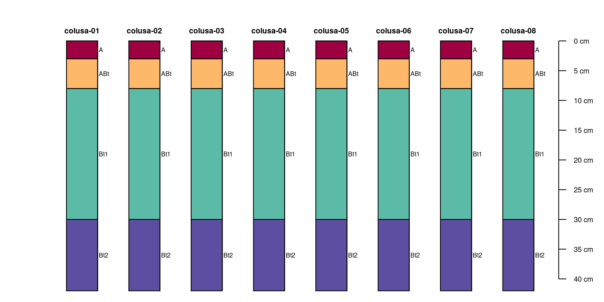
# "uniqueness" is a function of variables selected to consider
plotSPC(unique(x.sim, vars = c('top', 'bottom')),
name.style = 'center-center')
Plotting SoilProfileCollection Objects
The plotSPC() method for SoilProfileCollection objects generates sketches of profiles within the collection based on horizon boundaries, vertically aligned to an integer sequence from 1 to the number of profiles.
Horizon names are automatically extracted from a horizon-level attribute name (if present), or via an alternate attributed given as an argument: name='column.name'.
Horizon colors are automatically generated from the horizon-level attribute soil_color, or any other attribute of R-compatible color description given as an argument: color='column.name'. This function is highly customizable, therefore, it is prudent to consult help(plotSPC) from time to time. Soil colors in Munsell notation can be converted to R-compatible colors via munsell2rgb().
Many of the following examples make use of par() to set graphical options such as mar (customized margins) and/or xpd = NA (turn off clipping) to optimize display of different numbers of profiles and various plotSPC() arguments.
Making Adjustments
The explainPlotSPC() function is helpful for adjusting some of the more obscure arguments to plotSPC().
A basic plot with debugging information overlaid:
par(mar = c(4, 3, 2, 2))
explainPlotSPC(sp4, name = 'name')
Make sketches wider:
par(mar = c(4, 3, 2, 2))
explainPlotSPC(sp4, name = 'name', width = 0.3)
Move soil surface at 0cm “down” 5cm:
par(mar = c(4, 3, 2, 2))
explainPlotSPC(sp4, name = 'name', y.offset = 5)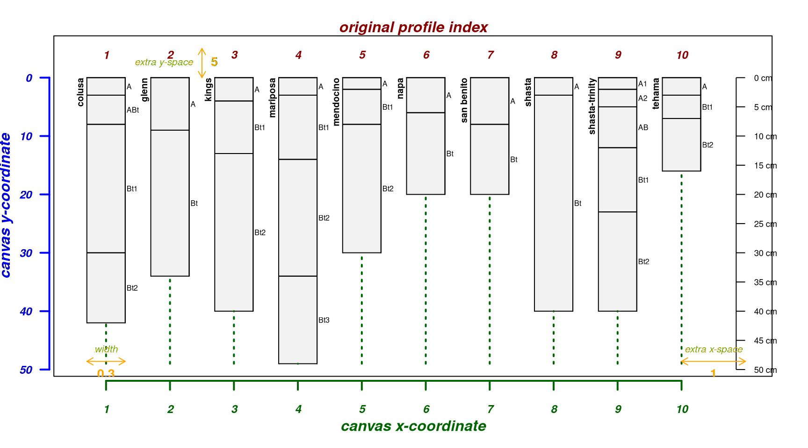
Move soil surface at 0cm “up” 10cm; useful for sketches of shallow profiles:
par(mar = c(4, 3, 2, 2))
explainPlotSPC(sp4, name = 'name', y.offset = -10)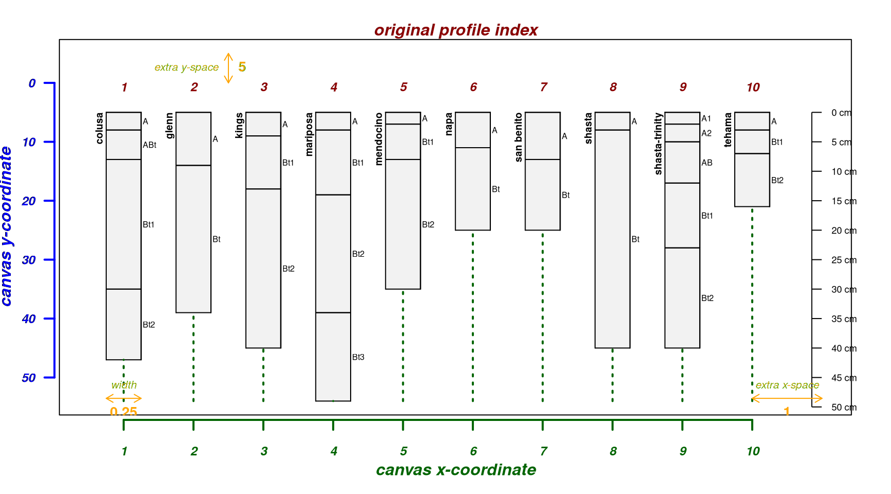
Scale depths by 50%:
par(mar = c(4, 3, 2, 2))
explainPlotSPC(sp4, name = 'name', scaling.factor = 0.5)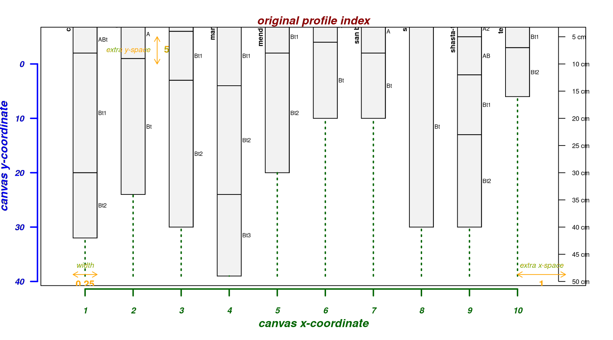
A graphical explanation of how profiles are re-arranged via plot.order argument:
par(mar = c(4, 3, 2, 2))
explainPlotSPC(sp4, name = 'name', plot.order = length(sp4):1)
Leave room for an additional 2 profile sketches:
par(mar = c(4, 3, 2, 2))
explainPlotSPC(sp4, name = 'name', n = length(sp4) + 2)
Small SoilProfileCollections
Making quality figures with fewer than 5 soil profiles usually requires more customization of the basic call to plotSPC. In general, the following are a good starting point:
- shrink margins and disable clipping with
par - adjust output graphic device (e.g.
png()) dimensions and resolution - increase font size with
cex.names - adjust sketch width with
width, typically within 0.15-0.35 - move depth axis to the left with negative
axis.line.offsetvalues
Get some example data from the Official Series Descriptions:
Using 5x6 inch output device:
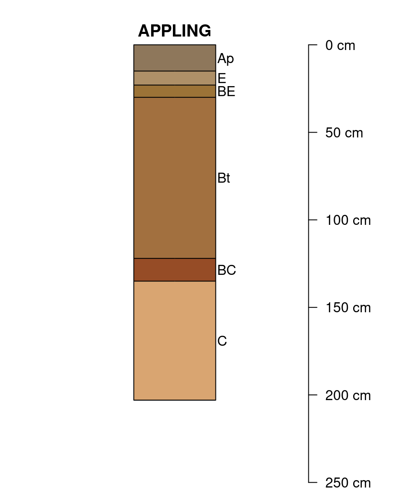
Using 7x6 inch output device, slight adjustments to width usually required:
# set margins and turn off clipping
par(mar = c(0, 2, 0, 4), xpd = NA)
plotSPC(x[1:2, ], cex.names = 1, width = 0.25)Using 8x6 inch output device, slight adjustments to axis.line.offset and width are usually required:
Horizon Depth Labeling
Horizon depths can be labeled for each profile as an alternative to a single depth axis.
par(mar = c(0, 0, 1, 1))
plotSPC(
x,
cex.names = 1,
name.style = 'center-center',
width = 0.3,
plot.depth.axis = FALSE,
hz.depths = TRUE,
fixLabelCollisions = TRUE,
hz.depths.offset = 0.08
)
As of aqp version 1.41, it is possible to “fix” overlapping horizon depth labels with the new fixLabelCollisions argument. This approach to labeling depths works best when moving horizon designations with the name.style argument. Note that setting fixLabelCollisions = TRUE may incur a significant performance penalty when plotting large SoilProfileCollection objects.
Relative Horizontal Positioning
Relative horizontal positioning via relative.pos argument. Can be used with plot.order but be careful: relative.pos must be specified in the final ordering of profiles. See ?plotSPC for details.
par(mar = c(4, 3, 2, 2))
pos <- jitter(1:length(sp4))
explainPlotSPC(sp4, name = 'name', relative.pos = pos)Relative positioning works well when the vector of positions is close to the default spacing along an integer sequence, but not when positions are closer than the width of a profile sketch.
par(mar = c(4, 3, 2, 2))
pos <- c(1, 1.2, 3, 4, 5, 5.2, 7, 8, 9, 10)
explainPlotSPC(sp4, name = 'name', relative.pos = pos)
The fixOverlap() function can be used to find a suitable arrangement of profiles based on a compromise between the suggested relative positions and minimization of overlap.
This is an iterative procedure, based on random perturbations of overlapping profiles, therefore it is possible for the algorithm to stop at a sub-optimal configuration. Results can be controlled using set.seed().
par(mar = c(4, 3, 2, 2))
new.pos <- fixOverlap(pos)
explainPlotSPC(sp4, name = 'name', relative.pos = new.pos)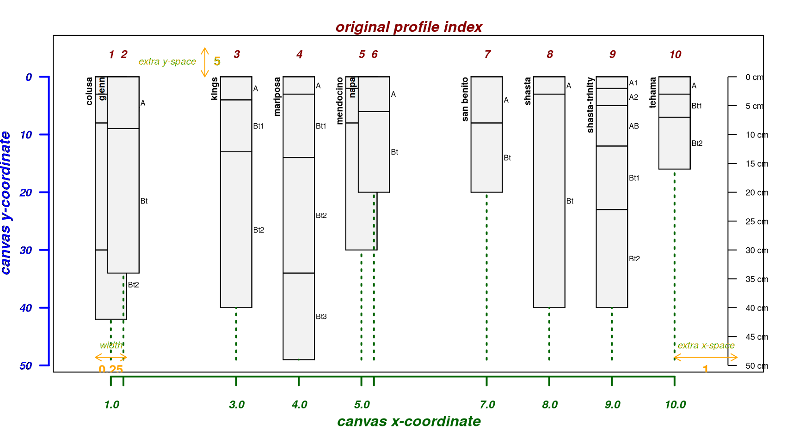
There are several parameters available for optimizing horizontal position in the presence of overlap. See ?fixOverlap for details and further examples.
par(mar = c(4, 3, 2, 2))
new.pos <- fixOverlap(pos, thresh = 0.7)
explainPlotSPC(sp4, name = 'name', relative.pos = new.pos) The SPC plotting ideas tutorial contains several additional examples.
The SPC plotting ideas tutorial contains several additional examples.
Thematic Sketches
Horizon-level attributes can be symbolized with color, in this case using the horizon-level attribute “clay”:
par(mar = c(0, 0, 3, 0))
plotSPC(sp4,
name = 'name',
color = 'clay',
col.label = 'Clay Content (%)')
Use a different set of colors:
par(mar = c(0, 0, 3, 0))
plotSPC(
sp4,
name = 'name',
color = 'clay',
col.palette = RColorBrewer::brewer.pal(10, 'Spectral'),
col.label = 'Clay Content (%)'
)
Categorical properties can also be used to make a thematic sketch. Colors are interpolated when there are more classes than colors provided by col.palette:
par(mar = c(0, 0, 3, 0))
plotSPC(
sp4,
name = 'name',
color = 'name',
col.palette = RColorBrewer::brewer.pal(5, 'Set1'),
col.label = 'Original Horizon Name'
)
Try with generalized horizon labels:
par(mar = c(0, 0, 3, 0))
# generalize horizon names into 3 groups
sp4$genhz <- generalize.hz(sp4$name, new = c('A', 'AB', 'Bt'), pat = c('A[0-9]?', 'AB', '^Bt'))
plotSPC(
sp4,
name = 'name',
color = 'genhz',
col.palette = RColorBrewer::brewer.pal(3, 'Spectral'),
col.label = 'Generalized Horizon Name'
)Horizon-level attributes that represent a volume fraction (e.g. coarse-fragment percentage) can be added to an existing figure. See ?addVolumeFraction for adding layers to an existing plot based on these attributes.
par(mar = c(0, 0, 3, 0))
# convert coarse rock fragment proportion to percentage
sp4$frag_pct <- sp4$CF * 100
# label horizons with fragment percent
plotSPC(sp4, name = 'frag_pct', color = 'frag_pct')
# symbolize volume fraction data
addVolumeFraction(sp4, colname = 'frag_pct')Depth Intervals
Annotation of depth-intervals can be accomplished using “brackets”. Here we extract top/bottom depths associated with top and bottom depth A horizons using the min/max variants of the depthOf() function. See ?depthOf for more details.
# extract top/bottom depths associated with all A horizons
tops <- minDepthOf(sp4, pattern = '^A', hzdesgn = 'name', top = TRUE)
bottoms <- maxDepthOf(sp4, pattern = '^A', hzdesgn = 'name', top = FALSE)
IDs <- profile_id(sp4)
# assemble data.frame
a <- data.frame(id = IDs, top = tops$top, bottom = bottoms$bottom)
# check
a
#> id top bottom
#> 1 colusa 0 8
#> 2 glenn 0 9
#> 3 kings 0 4
#> 4 mariposa 0 3
#> 5 mendocino 0 2
#> 6 napa 0 6
#> 7 san benito 0 8
#> 8 shasta 0 3
#> 9 shasta-trinity 0 12
#> 10 tehama 0 3
par(mar = c(0, 0, 0, 0))
plotSPC(sp4)
# annotate A horizon depth interval with brackets
addBracket(a, col = 'red', offset = -0.4)Add labels:
par(mar = c(0, 0, 0, 0))
plotSPC(sp4, name = 'name')
# addBracket() looks for a column `label`; add a ID for each bracket
a$label <- site(sp4)$id
# note that depth brackets "knows which profiles to use" via profile ID
addBracket(
a,
col = 'red',
label.cex = 0.75,
missing.bottom.depth = 25,
offset = -0.4
)
It is possible to arrange profile sketches by site-level grouping variable:
par(mar = c(0, 0, 0, 0))
groupedProfilePlot(sp4, groups = 'group')
addBracket(a, col = 'red', offset = -0.4)There need not be brackets for all profiles in a collection:
par(mar = c(0, 0, 0, 0))
a.sub <- a[1:4,]
groupedProfilePlot(sp4, groups = 'group')
addBracket(a.sub, col = 'red', offset = -0.4)
When bottom depths are missing an arrow is used:
a$bottom <- NA
par(mar = c(0, 0, 0, 0))
groupedProfilePlot(sp4, groups = 'group')
addBracket(a, col = 'red', offset = -0.4)Manually define bottom depth:
par(mar = c(0, 0, 0, 0))
groupedProfilePlot(sp4, groups = 'group')
addBracket(
a,
col = 'red',
label.cex = 0.75,
missing.bottom.depth = 25,
offset = -0.4
)
Further customization of brackets:
par(mar = c(0, 0, 0, 0))
plotSPC(sp4, max.depth = 75)
# copy root-restricting features
a <- restrictions(sp4)
# add a label: restrictive feature 'kind'
a$label <- a$kind
# add restrictions using vertical bars
addBracket(
a,
col = 'red',
label.cex = 0.75,
tick.length = 0,
lwd = 3,
offset = -0.4
)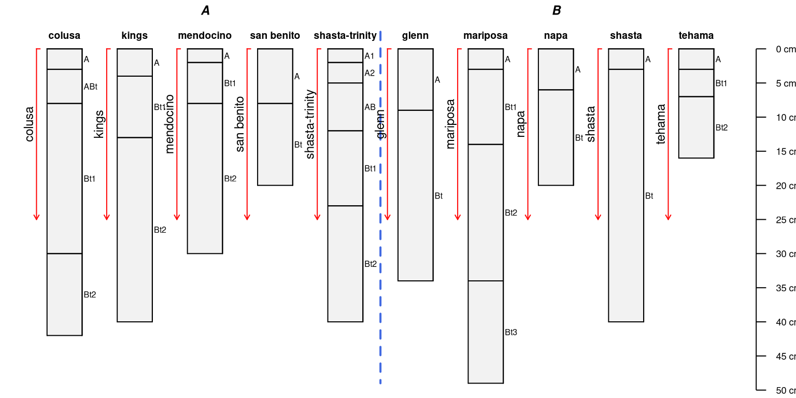
Notes
These functions (addBracket(), addDiagnosticBracket(), and addVolumeFraction()) will automatically compensate for alternative sketch ordering or relative positioning of profiles.
SVG Output for Use in Page Layout Tools
Sketches for use in layout tools such as Adobe Illustrator or Inkscape should be stored in a vector file format. SVG is compatible with most software titles. WMF output is compatible with MS Office tools and can be written with the win.metafile() function.
# library(svglite)
# svglite(filename = 'e:/temp/fig.svg', width = 7, height = 6, pointsize = 12)
#
# par(mar = c(0,2,0,4), xpd = NA)
# plotSPC(x, cex.names=1, axis.line.offset = -0.2, width=0.3)
#
# dev.off()Iterating Over Profiles in a Collection
The profileApply() function is an extension of the familiar apply() family of functions that operate on vectors (sapply() and tapply()), matrices (apply()), and lists (lapply())– extended to SoilProfileCollection objects.
The function named in the FUN argument is evaluated once for each profile in the collection, typically returning a single value per profile. In this case, the ordering of the results would match the ordering of values in the site level attribute table.
# max() returns the depth of a soil profile
sp4$soil.depth <- profileApply(sp4, FUN = max)
# max() with additional argument give max depth to non-missing 'clay'
sp4$soil.depth.clay <- profileApply(sp4, FUN = max, v = 'clay')
# nrow() returns the number of horizons
sp4$n.hz <- profileApply(sp4, FUN = nrow)
# compute the mean clay content by profile using an inline function
sp4$mean.clay <- profileApply(sp4, FUN = function(i) mean(i$clay))
# estimate soil depth based on horizon designation
sp4$soil.depth <- profileApply(sp4, estimateSoilDepth, name = 'name')When FUN returns a vector of the same length as the number of horizons in a profile, profileApply() can be used to create new horizon-level attributes. For example, the change in clay content by horizon depth (delta.clay, below) could be calculated as:
# save as horizon-level attribute
sp4$delta.clay <- profileApply(sp4, FUN = function(i) c(NA, diff(i$clay)))
# check results:
horizons(sp4)[1:6, c('id', 'top', 'bottom', 'clay', 'delta.clay')]
#> id top bottom clay delta.clay
#> 1 colusa 0 3 21 NA
#> 2 colusa 3 8 27 6
#> 3 colusa 8 30 32 5
#> 4 colusa 30 42 55 23
#> 5 glenn 0 9 25 NA
#> 6 glenn 9 34 34 9More complex summaries can be generated by writing a custom function that is then called by profileApply(). Note that each profile is passed into this function and accessed via a temporary variable (i), which is a SoilProfileCollection object containing a single profile. See help(profileApply) for details.
A list of SoilProfileCollection objects returned from a custom function can be combined into a single SoilProfileCollection object via combine().
# compute hz-thickness weighted mean exchangeable-Ca:Mg
wt.mean.ca.mg <- function(i) {
# use horizon thickness as a weight
thick <- i$bottom - i$top
# compute the thickness weighted mean, ignoring missing values
weighted.mean(i$ex_Ca_to_Mg, w = thick, na.rm = TRUE)
}
# apply our custom function and save results as a site-level attribute
sp4$wt.mean.ca.to.mg <- profileApply(sp4, wt.mean.ca.mg)We can now use our some of our new site-level attributes to order the profiles when plotting.
In this case profiles are ordered based on the horizon-thickness weighted mean, exchangeable Ca:Mg values. Horizons are colored by exchangeable Ca:Mg values.
# plot the data using our new order based on Ca:Mg weighted average
# the result is an index of rank
new.order <- order(sp4$wt.mean.ca.to.mg)
par(mar = c(4, 0, 3, 0)) # tighten figure margins
plotSPC(sp4,
name = 'name',
color = 'ex_Ca_to_Mg',
plot.order = new.order)
# add an axis labeled with the sorting criteria
axis(1, at = 1:length(sp4), labels = round(sp4$wt.mean.ca.to.mg, 3), cex.axis = 0.75)
mtext(1, line = 2.25, text = 'Horizon Thickness Weighted Mean Ex. Ca:Mg', cex = 0.75)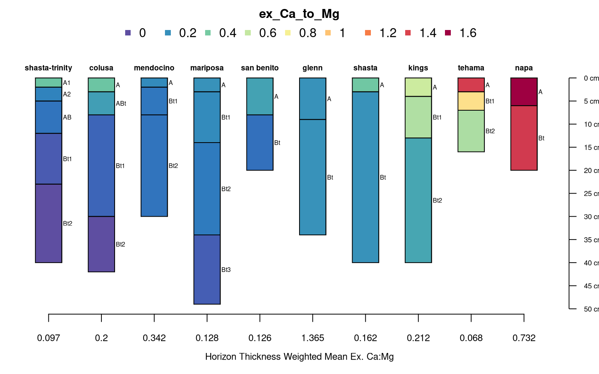
Slicing Horizons: dice()
Collections of soil profiles can be sliced (or re-sampled) into regular depth-intervals with the dice() function. The slicing structure and variables of interest are defined via formula notation:
# slice select horizon-level attributes
seq ~ var.1 + var.2 + var.3 + ...
# slice all horizon-level attributes
seq ~ .where seq is a sequence of integers (e.g. 0:15, c(5,10,15,20), etc.) and var.1 + var.2 + var.3 + ... are horizon-level attributes to slice. Both continuous and categorical variables can be named on the right-hand-side of the formula. The results returned by dice() is either a SoilProfileCollection, or data.frame when called with the optional argument SPC = FALSE. For example, to slice our sample data set into 1-cm intervals, from 0–15 cm:
# resample to 1cm slices
s <- dice(sp4, fm = 0:15 ~ sand + silt + clay + name + ex_Ca_to_Mg)
# check the result
class(s)
#> [1] "SoilProfileCollection"
#> attr(,"package")
#> [1] "aqp"
# plot sliced data
par(mar = c(0, 0, 3, 0)) # tighten figure margins
plotSPC(s, color = 'ex_Ca_to_Mg')
Once soil profile data have been sliced, it is simple to extract “chunks” of data by depth interval via [-subsetting:
# slice from 0 to max depth in the collection
s <- dice(sp4, fm= 0:max(sp4) ~ sand + silt + clay + name + ex_Ca_to_Mg)
# extract all data over the range of 5--10 cm:
plotSPC(s[, 5:10])
# extract all data over the range of 25--50 cm:
plotSPC(s[, 25:50])
# extract all data over the range of 10--20 and 40--50 cm:
plotSPC(s[, c(10:20, 40:50)])Truncation: trunc()
Truncate the SPC to the interval of 5-15cm:
# truncate to the interval 5-15cm
sp4.truncated <- trunc(sp4, 5, 15)
par(mar = c(0, 0, 3, 0))
plotSPC(sp4.truncated, name = 'name', color = 'ex_Ca_to_Mg')
rect(xleft = 0.5, ybottom = 15, xright = length(sp4) + 0.5, ytop = 5)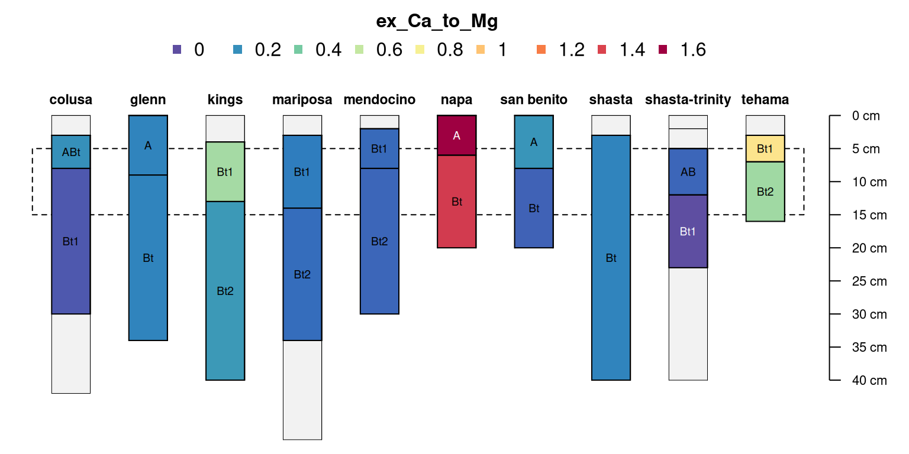
Depth Aggregation: slab()
Depth-wise summary of horizon-level attributes is performed with the slab() function. Profile grouping criteria and horizon attribute selection is parametrized via formula: either groups ~ var1 + var2 + var3 where named variables are aggregated within groups OR where named variables are aggregated across the entire collection ~ var1 + var2 + var3. The default summary function (slab.fun) computes the 5th, 25th, 50th, 75th, and 95th percentiles via Harrell-Davis quantile estimator.
The depth structure (“slabs”) over which summaries are computed is defined with the slab.structure argument using:
- a single integer (e.g.
10): data are aggregated over a regular sequence of 10-unit thickness slabs - a vector of 2 integers (e.g.
c(50, 60)): data are aggregated over depths spanning 50–60 units - a vector of 3 or more integers (e.g.
c(0, 5, 10, 50, 100)): data are aggregated over the depths spanning 0–5, 5–10, 10–50, 50–100 units
# aggregate a couple of the horizon-level attributes,
# across the entire collection,
# from 0--10 cm
# computing the mean value ignoring missing data
slab(
sp4,
fm = ~ sand + silt + clay,
slab.structure = c(0, 10),
slab.fun = mean,
na.rm = TRUE
)
#> variable all.profiles value top bottom contributing_fraction
#> 1 sand 1 47.63 0 10 1
#> 2 silt 1 31.15 0 10 1
#> 3 clay 1 21.11 0 10 1
# again, this time within groups defined by a site-level attribute:
slab(
sp4,
fm = group ~ sand + silt + clay,
slab.structure = c(0, 10),
slab.fun = mean,
na.rm = TRUE
)
#> variable group value top bottom contributing_fraction
#> 1 sand A 48.26 0 10 1
#> 2 silt A 31.52 0 10 1
#> 3 clay A 20.30 0 10 1
#> 4 sand B 47.00 0 10 1
#> 5 silt B 30.78 0 10 1
#> 6 clay B 21.92 0 10 1
# again, this time over several depth ranges
slab(
sp4,
fm = ~ sand + silt + clay,
slab.structure = c(0, 10, 25, 40),
slab.fun = mean,
na.rm = TRUE
)
#> variable all.profiles value top bottom contributing_fraction
#> 1 sand 1 47.63000 0 10 1.0000000
#> 2 sand 1 42.38931 10 25 0.8733333
#> 3 sand 1 32.14607 25 40 0.5933333
#> 4 silt 1 31.15000 0 10 1.0000000
#> 5 silt 1 29.41221 10 25 0.8733333
#> 6 silt 1 31.34831 25 40 0.5933333
#> 7 clay 1 21.11000 0 10 1.0000000
#> 8 clay 1 28.10687 10 25 0.8733333
#> 9 clay 1 36.26966 25 40 0.5933333
# again, this time along 1-cm slices, computing quantiles
agg <- slab(sp4, fm = ~ Mg + Ca + ex_Ca_to_Mg + CEC_7 + clay)
# see ?slab for details on the default aggregate function
head(agg)
#> variable all.profiles p.q5 p.q25 p.q50 p.q75 p.q95 top bottom contributing_fraction
#> 1 Mg 1 6.015 12.175 14.60 21.125 27.13 0 1 1
#> 2 Mg 1 6.015 12.175 14.60 21.125 27.13 1 2 1
#> 3 Mg 1 6.015 12.175 19.15 25.650 27.76 2 3 1
#> 4 Mg 1 6.195 13.175 21.05 25.050 30.73 3 4 1
#> 5 Mg 1 6.195 13.175 21.05 25.050 30.73 4 5 1
#> 6 Mg 1 6.195 13.175 21.05 26.250 31.72 5 6 1
# plot median +/i bounds defined by the 25th and 75th percentiles
# this is lattice graphics, syntax is a little rough
xyplot(top ~ p.q50 | variable, data = agg, ylab = 'Depth',
xlab = 'median bounded by 25th and 75th percentiles',
lower = agg$p.q25, upper = agg$p.q75, ylim = c(42, -2),
panel = panel.depth_function,
alpha = 0.25, sync.colors = TRUE,
par.settings = list(superpose.line = list(col = 'RoyalBlue', lwd = 2)),
prepanel = prepanel.depth_function,
cf = agg$contributing_fraction, cf.col = 'black', cf.interval = 5,
layout = c(5, 1), strip = strip.custom(bg = grey(0.8)),
scales = list(x = list(
tick.number = 4,
alternating = 3,
relation = 'free'
))
)
Depth-wise aggregation can be useful for visual evaluation of multivariate similarity among groups of profiles.
# processing the "napa" and tehama profiles
idx <- which(profile_id(sp4) %in% c('napa', 'tehama'))
napa.and.tehama <- slab(sp4[idx,], fm = ~ Mg + Ca + ex_Ca_to_Mg + CEC_7 + clay)
# combine with the collection-wide aggregate data
g <- make.groups(collection = agg, napa.and.tehama = napa.and.tehama)
# compare graphically:
xyplot(top ~ p.q50 | variable, groups = which, data = g, ylab = 'Depth',
xlab = 'median bounded by 25th and 75th percentiles',
lower = g$p.q25, upper = g$p.q75, ylim = c(42, -2),
panel = panel.depth_function,
alpha = 0.25, sync.colors = TRUE, cf = g$contributing_fraction, cf.interval = 10,
par.settings = list(superpose.line = list(
col = c('RoyalBlue', 'Red4'),
lwd = 2,
lty = c(1, 2)
)),
prepanel = prepanel.depth_function,
layout = c(5, 1),
strip = strip.custom(bg = grey(0.8)),
scales = list(x = list(
tick.number = 4,
alternating = 3,
relation = 'free'
)),
auto.key = list(columns = 2,
lines = TRUE,
points = FALSE)
)Change of Support
There is often a need for converting data to a new set of depth intervals. This re-alignment of horizon depths via aggregation can be considered a type of change of support. The operation on SoilProfileCollections requires some aggregation function (mean, median, etc.) and possibly interpolation (e.g. splines).
The slab() function is the simplest way to implement a change of depth support via aggregation. The following example is based on a set of 9 randomly generated profiles, re-aligned to the Global Soil Map (GSM) standard depths.
library(data.table)
library(RColorBrewer)
# 9 random profiles
# 1 simulated properties via logistic power peak (LPP) function
# 6, 7, or 8 horizons per profile
# result is a list of single-profile SPC
d <- lapply(
as.character(1:9),
random_profile,
n = c(6, 7, 8),
n_prop = 1,
method = 'LPP',
SPC = TRUE
)
# combine into single SPC
d <- combine(d)
# GSM depths
gsm.depths <- c(0, 5, 15, 30, 60, 100, 200)
# aggregate using mean: wt.mean within slabs
# see ?slab for ideas on how to parameterize slab.fun
d.gsm <- slab(d, fm = id ~ p1, slab.structure = gsm.depths, slab.fun = mean, na.rm = TRUE)
# note: result is in long-format
# note: horizon names are lost due to aggregation
head(d.gsm, 7)
#> variable id value top bottom contributing_fraction
#> 1 p1 1 19.21595 0 5 1.0000000
#> 2 p1 1 19.22002 5 15 1.0000000
#> 3 p1 1 19.22273 15 30 1.0000000
#> 4 p1 1 19.54932 30 60 1.0000000
#> 5 p1 1 22.43912 60 100 1.0000000
#> 6 p1 1 21.17776 100 200 0.8513514
#> 7 p1 2 13.70462 0 5 1.0000000A simple graphical comparison of the original and re-aligned soil profile data, after converting slab() result from long -> wide format with {data.table} dcast():
# reshape to wide format
# this scales to > 1 aggregated variables
d.gsm.pedons <- data.table::dcast(data.table(d.gsm), id + top + bottom ~ variable, value.var = 'value')
depths(d.gsm.pedons) <- id ~ top + bottom
# iterate over aggregated profiles and make new hz names
d.gsm.pedons$hzname <- profileApply(d.gsm.pedons, function(i) {
paste0('GSM-', 1:nrow(i))
})
# compare original and aggregated
par(mar = c(1, 0, 3, 3), mfrow = c(2, 1))
plotSPC(d, color = 'p1')
plotSPC(d.gsm.pedons, color = 'p1')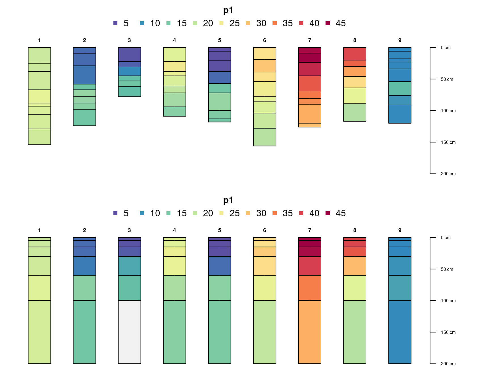
Note that re-aligned data may not represent reality (and should therefore be used with caution) when the original soil depth is shallower than the deepest of the new (re-aligned) horizon depths. The contributing_fraction metric returned by slab() can be useful for assessing how much real data were used to generate the new set of re-aligned data.
# reshape to wide format
d.gsm.pedons.2 <- data.table::dcast(data.table(d.gsm), id + top + bottom ~ variable, value.var = 'contributing_fraction')
depths(d.gsm.pedons.2) <- id ~ top + bottom
# compare original and aggregated
par(mar = c(1, 0, 3, 3), mfrow = c(2, 1))
plotSPC(d.gsm.pedons, name = '', color = 'p1')
plotSPC(
d.gsm.pedons.2,
name = '',
color = 'p1',
col.label = 'Contributing Fraction',
col.palette = RColorBrewer::brewer.pal(10, 'Spectral')
)Pair-Wise Dissimilarity: NCSP()
Calculation of between-profile dissimilarity is performed using NCSP() (Numerical Classification of Soil Profiles). As of aqp 2.0, NCSP() replaces the older implementation in profile_compare() which is now deprecated. Dissimilarity values depend on attributes selection (e.g. clay, CEC, pH , etc.), optional depth-weighting parameter (k), and a maximum depth of evaluation (maxDepth).
See the function manual page and this paper for details.
library(cluster)
library(sharpshootR)
# start fresh
data(sp4)
depths(sp4) <- id ~ top + bottom
hzdesgnname(sp4) <- 'name'
# eval dissimilarity:
# using Ex-Ca:Mg ratio and CEC at pH 7
# no depth-weighting (k = 0)
# to a maximum depth of 40 cm
d <- NCSP(sp4, vars = c('ex_Ca_to_Mg', 'CEC_7'), k = 0, maxDepth = 40)
# check distance matrix:
round(d, 1)
#> colusa glenn kings mariposa mendocino napa san benito shasta shasta-trinity
#> glenn 13.8
#> kings 16.0 13.1
#> mariposa 8.4 11.6 16.5
#> mendocino 12.1 8.2 17.0 15.5
#> napa 31.5 24.9 30.5 30.3 22.2
#> san benito 26.8 21.4 27.4 29.3 16.4 18.0
#> shasta 17.2 13.6 8.7 17.6 17.6 34.8 23.3
#> shasta-trinity 6.4 16.9 22.3 9.6 17.0 30.9 28.3 23.3
#> tehama 30.1 23.9 29.2 28.6 20.8 9.0 15.3 32.7 29.2
# visualize dissimilarity matrix via divisive hierarchical clustering
d.diana <- diana(d)
# this function is from the sharpshootR package
# requires some manual adjustments
par(mar = c(0, 0, 4, 0))
plotProfileDendrogram(
sp4,
d.diana,
scaling.factor = 0.9,
y.offset = 5,
cex.names = 0.7,
width = 0.3,
color = 'ex_Ca_to_Mg',
name.style = 'center-center',
hz.depths = TRUE,
plot.depth.axis = FALSE
)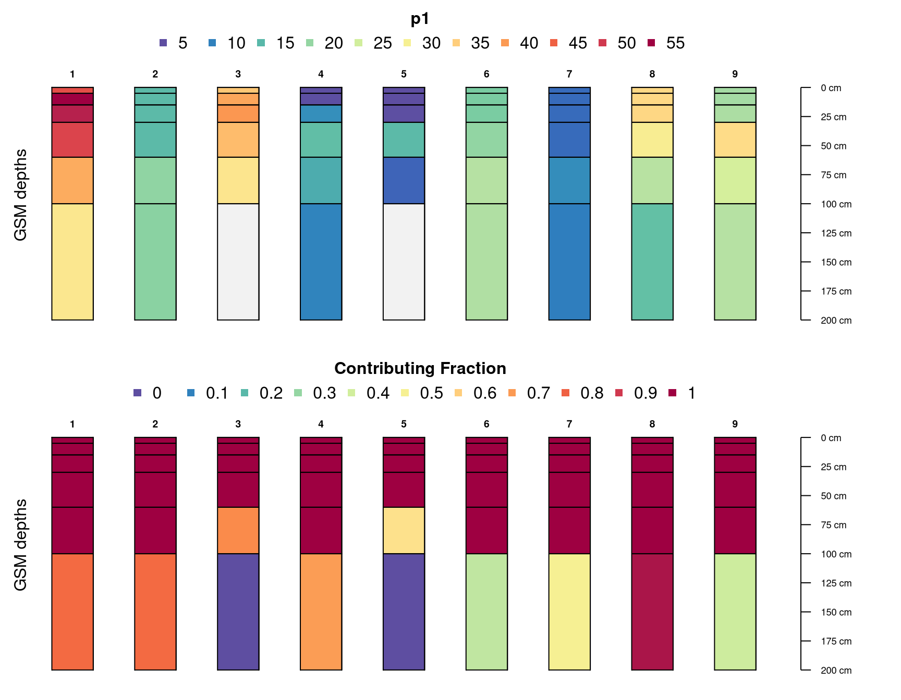
Some additional examples can be found in:
This document is based on aqp version 2.0.